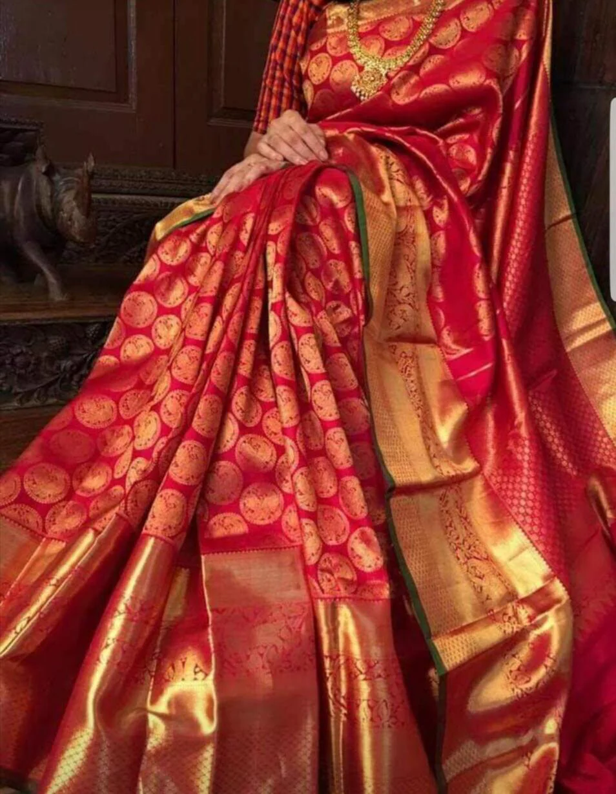
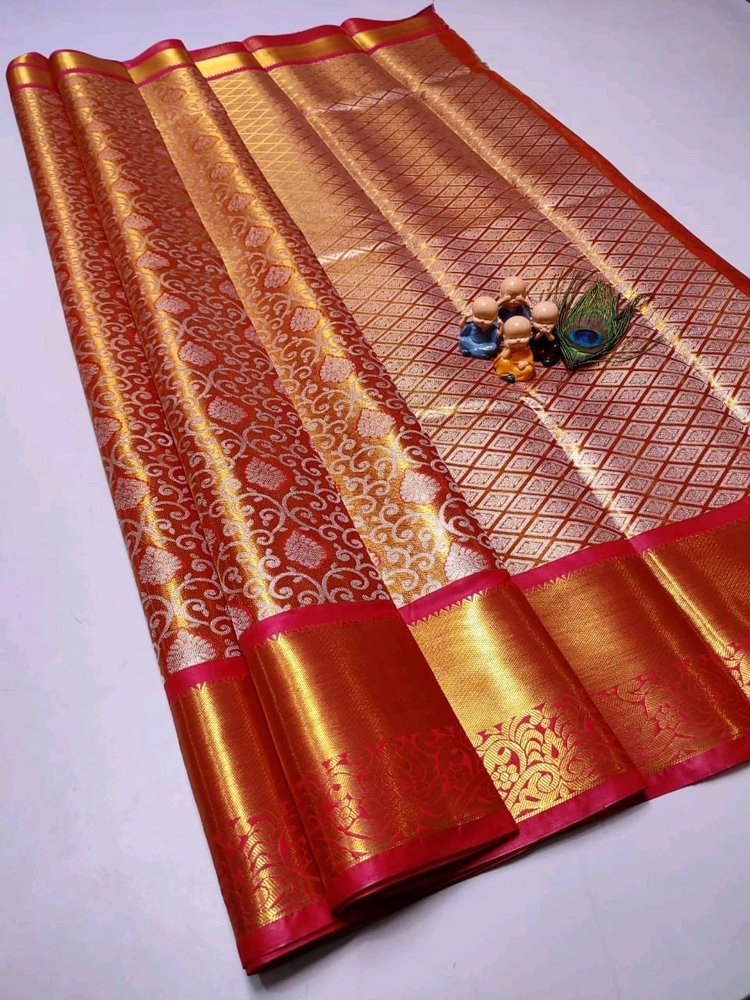

📖 Origin & Heritage
Kanjivaram Silk Sarees, also called Kanchipuram Sarees, originate from Kanchipuram, Tamil Nadu – a town known as the “Silk City of India.” These sarees are woven from pure mulberry silk with real gold and silver zari. Their tradition dates back over 400 years and is deeply rooted in South Indian temple culture and Dravidian architecture motifs.
💡 Did You Know?
🌟 A pure Kanjivaram saree can last for generations and is often passed down as a family heirloom.
👑 The pallu (end-piece) is woven separately and then attached, making it extra strong.
🎨 Designs often feature temple borders, checks, stripes, and motifs inspired by mythology.
🏛️ In 2005, Kanchipuram Silk Sarees were awarded a GI (Geographical Indication) tag.
🌺 Unique Features of Kanjivaram
Durability – The interlocked weaving technique makes it one of the strongest silks in the world.
Temple Borders – Inspired by South Indian temple gopurams (towers).
Zari Work – Traditionally woven with threads dipped in real gold and silver.
Vibrant Colors – Contrasting pallus and borders add striking elegance.
🎯 Quick Quiz:
The borders of Kanjivaram Sarees are inspired by what?